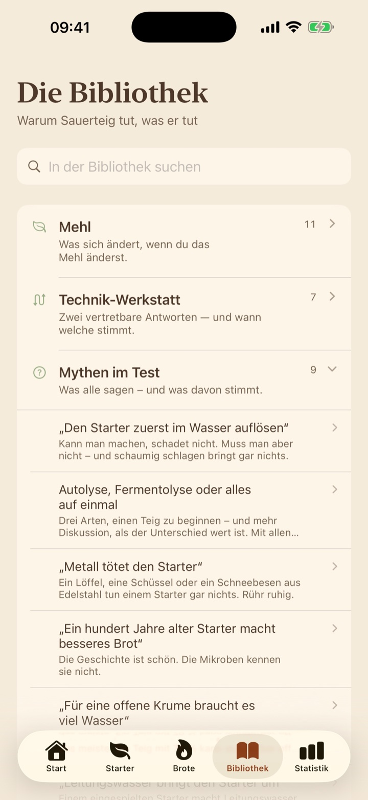
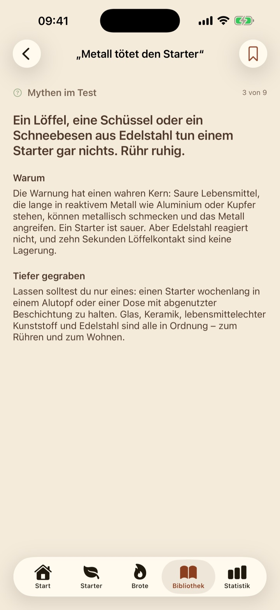
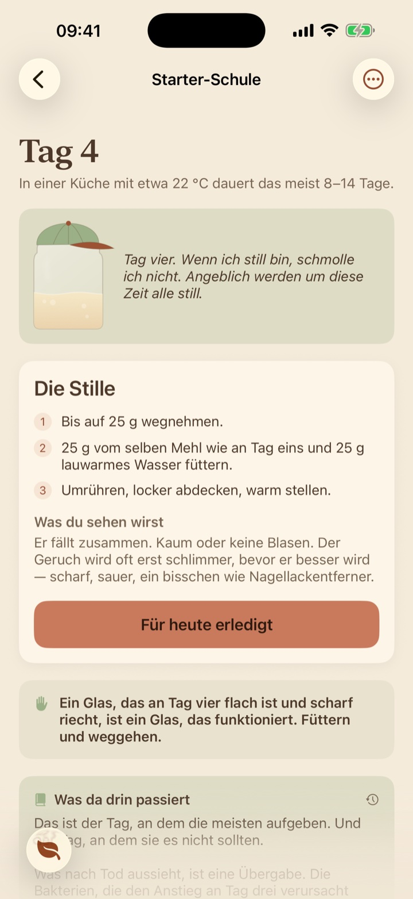

Sie bringt dir Sauerteig bei
Sie erklärt, wenn du es brauchst, und zieht deinen ersten Starter mit dir groß.

Die Bibliothek
Wenn ein Brot danebengeht, schlägt sie die richtige Seite auf.
Vierundachtzig kurze Texte in achtzehn Regalen: warum Teig aufgeht, was Salz macht, welche Mythen den Test bestehen.

Siebzehn der Texte gibt es hier zu lesen: die Mythen im Test, die Brote, die danebengingen, und warum sich Zeiten ändern.
In der Bibliothek lesenStarter-Schule
Von Mehl und Wasser zum lebendigen Starter.
Sie begleitet dich Tag für Tag durch die erste Zeit und richtet sich nach dem Glas, nicht nach dem Kalender. Auch an dem Tag, an dem es still wird und die meisten aufgeben.

Und unterwegs
- Ein ZeugnisDer Schüler bekommt Noten, und ein Diplom zum Abschluss.
- Mythen im TestEin Regal für das, was alle sagen.
- Wenn es schiefgehtDichte Krume, flaches Brot, sauer ohne Maß: was passiert ist und warum.
- Mehl, in GrammWie viel Wasser jedes Mehl will.
- Ofen und WerkzeugWas du brauchst, und worauf du verzichten kannst.
- Lesezeichen und SucheHeb die Texte auf, zu denen du zurückkommst.
Dein Starter wartet
Laden im App Store Bald im App StoreDein Tagebuch synchronisiert über deine eigene iCloud, und du kannst eine Sicherung aufheben.